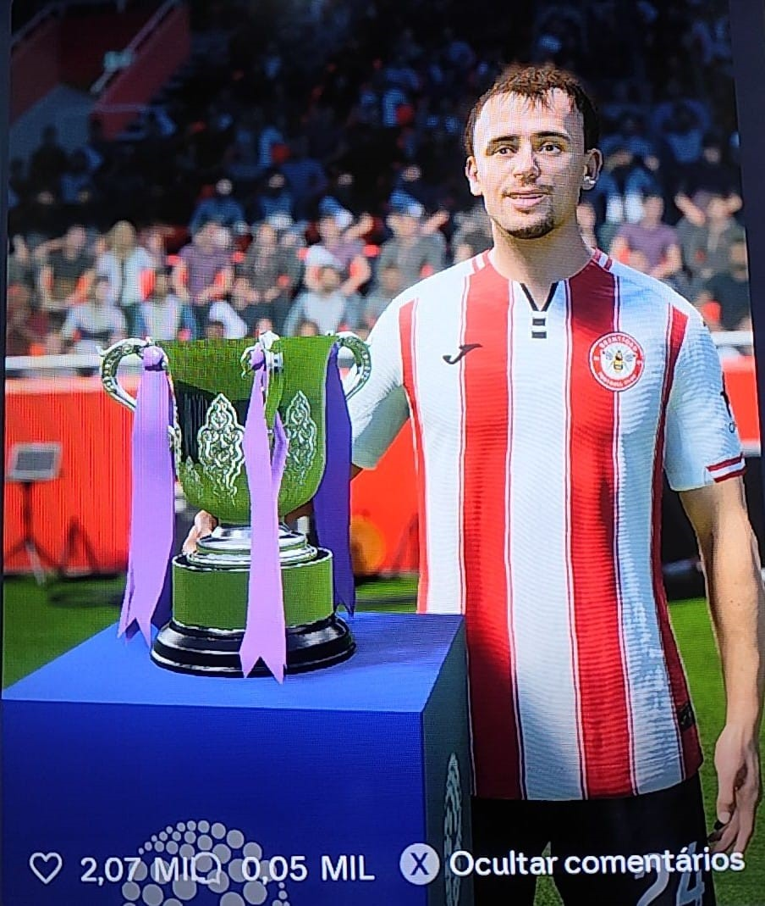
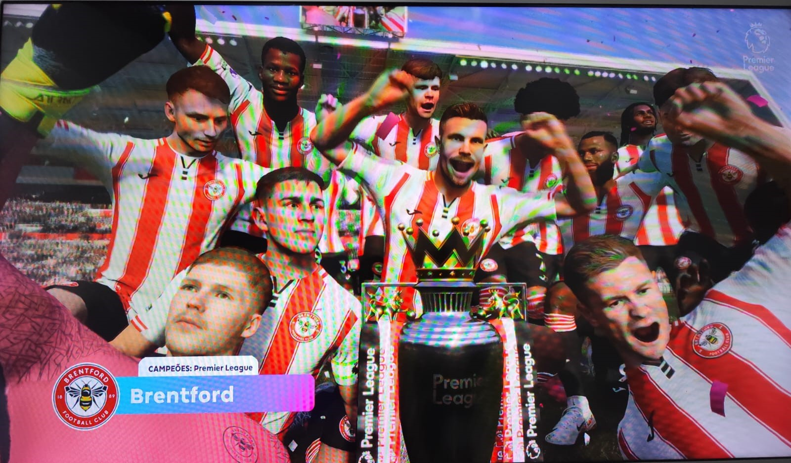
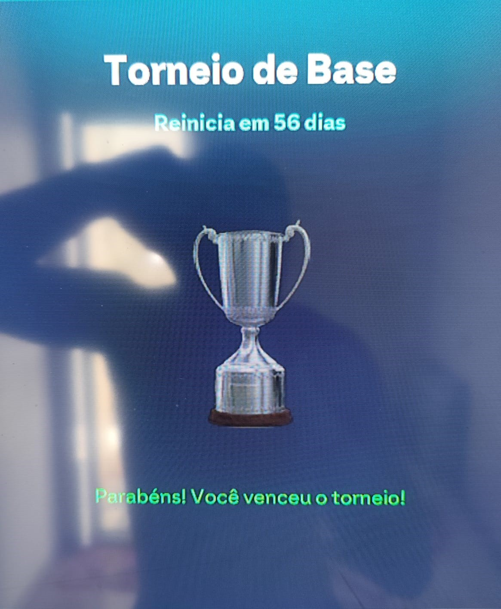
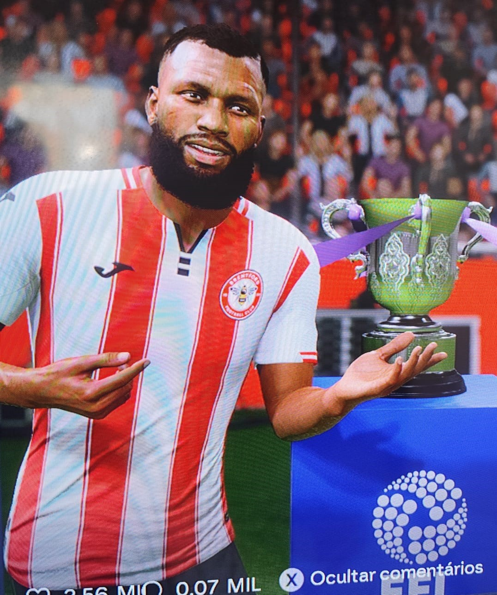

Brentford FC – Modo Carreira EA FC 26
Treinador: Maycon Santos (Brasil)
Salário do Técnico: €83.000 por semana
Treinador: Maycon Santos (Brasil)
Salário do Técnico: €83.000 por semana
Maycon Santos
Treinador do Brentford FC
Maycon Santos, brasileiro de 42 anos, natural de São Paulo (Zona Sul), é um ex-jogador de futebol e futsal que construiu uma trajetória marcada por superação, títulos e paixão pelo esporte.
Sua carreira começou no tradicional Amigos FC, onde deu os primeiros passos no futsal. Em seguida, se transferiu para o Magnus Futsal, clube onde viveu um dos momentos mais importantes da sua carreira.
Atuando em alto nível, Maycon foi convocado para a Seleção Brasileira de Futsal, conquistando o título de Campeão Mundial, um feito que marcou definitivamente seu nome no esporte.
Após o sucesso no futsal, veio a grande virada: Maycon teve a oportunidade de atuar no São Paulo Futsal, consolidando sua carreira em um dos maiores clubes do país. Alguns anos depois, retornou ao Amigos FC, clube que o revelou, onde encerrou sua carreira como atleta aos 38 anos, devido a problemas crônicos nos joelhos.
Apaixonado pelo futebol, Maycon decidiu seguir no esporte, agora fora das quadras. Seu plano inicial era se tornar treinador de futsal, mas o destino o levou para o futebol de campo.
Com a licença de treinador obtida pela CBF, Maycon se mudou para Londres, Inglaterra, onde sua vida mudou completamente. Lá, conheceu representantes do Brentford FC, que o convidaram para integrar a comissão técnica das categorias de base.
Seu trabalho chamou atenção rapidamente e o levou à promoção para treinador do time Sub-20.
Dois anos depois:
🏆 Campeão da EFL Championship
🥈 Vice-campeão da Carabao Cup
⬆️ Acesso à Premier League
Aos 42 anos, Maycon Santos assumiu o comando do time principal do Brentford FC.
E o resto… é história.
Temporada 25/26
Time que brigaria contra o rebaixamento foi campeão da Premier League, Carabao Cup e da Copa da Inglaterra (FA Cup).
Estilo de jogo envolvente e moderno, que vem parando o mundo do futebol.
🏆 Premier League
Temporada 2025/2026
🏆 Carabao Cup
Temporada 2025/2026
🏆 FA Cup (Copa da Inglaterra)
Temporada 2025/2026
Igor Thiago — 40 gols (25 partidas)
Konstantinos Karetsas — 25 gols (32 partidas)
Igor Thiago — 17 assistências (25 partidas)
Konstantinos Karetsas — 17 assistências (32 partidas)
Mikkel Damsgaard — 16 assistências (28 partidas)
Konstantinos Karetsas — 6 gols (6 partidas)
Zine — 6 gols (6 partidas)
Konstantinos Karetsas — 5 assistências (6 partidas)
Lucas Ferreira — 5 assistências (6 partidas)
Igor Thiago — 17 gols (6 partidas)
Dango Ouattara — 9 gols (6 partidas)
Mikkel Damsgaard — 12 assistências (6 partidas)
Dango Ouattara — 8 assistências (6 partidas)
Igor Thiago — 8 assistências (6 partidas)
2025/2026
2025/2026
Temporada 2025/2026

Predefinição: Personalizado
Esquema: 4-2-1-3
Estilo de armação: Passe Curto
Abordagem defensiva: Equilibrado
Intenso: 70
Pesado: 80
Leve: 80
Recuperação: 70
Goleiro: GL que sai jogando
Foco: Defesa
Laterais: Lateral
Foco: Equilibrado
Volantes: Contenção
Foco: Defesa
Meia Campista: Armador
Foco: Equilibrado
Pontas: Cortar pra dentro
Foco: Equilibrado
Centroavante: Centroavante
Foco: Ataque
Goleiro: Caoimhin Kelleher
Lateral Direito: Michael Kayode
Zagueiros:
Sepp Van De Berg
Nathan Collins
Lateral Esquerdo: Keane Lewis-Potter
Volantes:
Jordan Henderson
Yegor Yarmoliuk
Meio-Campista: Mikkel Damsgaard
Ponta Direita: Dango Ouattara
Ponta Esquerda: Kevin Schade
Centroavante: Igor Thiago
Goleiro: Rome-Jayden Owusu-Oduro
Lateral Direito: Nicolò Savona
Zagueiros:
Josh Acheampong
Ayden Heaven
Lateral Esquerdo: Adam Aznou
Volantes:
Jorthy Mokio
Metinho
Meio-Campista: Konstantinos Karetsas
Ponta Direita: Lucas Ferreira
Ponta Esquerda: Rio Ngumoha
Centroavante: Zine
Goleiros
Caoimhin Kelleher / 27 anos 🇮🇪 Irlanda
Rome-Jayden Owusu-Oduro / 21 anos 🇳🇱 Holanda
Laterais Esquerdos
Adam Aznou / 19 anos 🇲🇦 Marrocos
Keane Lewis-Potter / 24 anos 🇬🇧 Inglaterra
Zagueiros
Josh Acheampong / 19 anos 🇬🇧 Inglaterra
Ayden Heaven / 19 anos 🇬🇧 Inglaterra
Sepp Van De Berg / 24 anos 🇳🇱 Holanda
Nathan Collins / 24 anos 🇮🇪 Irlanda
Laterais Direitos
Nicolò Savona / 22 anos 🇮🇹 Itália
Michael Kayode / 21 anos 🇮🇹 Itália
Volantes
Jorthy Mokio / 17 anos 🇧🇪 Bélgica
Jordan Henderson / 35 anos 🇬🇧 Inglaterra
Metinho / 22 anos 🇧🇷 Brasil
Yegor Yarmoliuk / 21 anos 🇺🇦 Ucrânia
Pontas Esquerdas
Rio Ngumoha / 17 anos 🇬🇧 Inglaterra
Kevin Schade / 24 anos 🇩🇪 Alemanha
Meias
Konstantinos Karetsas / 18 anos 🇬🇷 Grécia
Mikkel Damsgaard / 25 anos 🇩🇰 Dinamarca
Pontas Direitas
Dango Ouattara / 23 anos 🇧🇫 Burkina Faso
Lucas Ferreira / 19 anos 🇧🇷 Brasil
Atacantes
Igor Thiago / 24 anos 🇧🇷 Brasil
Zine / 23 anos 🇦平 Angola
Temporada 26/27
Conteúdo em atualização...
🏆 Torneio de Base
Temporada 2026/2027
🏆 Carabao Cup
Temporada 2026/2027
Aguardando novas conquistas...
Temporada 2026/2027
Temporada 2026/2027
Predefinição: Personalizado
Esquema: 4-2-1-3
Estilo de armação: Passe Curto
Abordagem defensiva: Equilibrado
Intenso: 70
Pesado: 80
Leve: 80
Recuperação: 70
Goleiro: GL que sai jogando
Foco: Defesa
Laterais: Lateral
Foco: Equilibrado
Volantes: Contenção
Foco: Defesa
Meia Campista: Armador
Foco: Equilibrado
Pontas: Cortar pra dentro
Foco: Equilibrado
Centroavante: Centroavante
Foco: Ataque
Goleiro: Caoimhin Kelleher
Lateral Direito: Michael Kayode
Zagueiros:
Nathan Collins
Lucas Beraldo
Lateral Esquerdo: Keane Lewis-Potter
Volantes:
João Gomes
Gabriel Moscardo
Meio-Campista: Mikkel Damsgaard
Ponta Direita: Dango Ouattara
Ponta Esquerda: Kevin Schade
Centroavante: Igor Thiago
Goleiro: Rome-Jayden Owusu-Oduro
Lateral Direito: Nicolò Savona
Zagueiros:
Sepp Van De Berg
Vitor Reis
Lateral Esquerdo: Adam Aznou
Volantes:
Metinho
Jordan Henderson
Giorgio Costantini
Meio-Campista: Konstantinos Karetsas
Ponta Direita: Lucas Ferreira
Ponta Esquerda: Rio Ngumoha
Centroavante: Marcos Leonardo
Goleiros
Juliano Guimarães / 14 anos 🇧🇷 Brasil
Zagueiros
Ignacio Revel / 15 anos 🇪🇸 Espanha
Laterais Esquerdos
Juanma Pastor / 17 anos 🇦🇷 Argentina
Volantes
Marcos Fernandes / 18 anos 🇵🇹 Portugal
Meias
Nicolas Cano / 17 anos 🇺🇾 Uruguai
Pontas Direitas
Pyon Chol Chun / 15 anos 🇰🇷 Coreia do Sul
Atacantes
Christian Branco / 15 anos 🇧🇷 Brasil
Goleiros
Caoimhin Kelleher / 27 anos 🇮🇪 Irlanda
Rome-Jayden Owusu-Oduro / 21 anos 🇳🇱 Holanda
Laterais Esquerdos
Adam Aznou / 19 anos 🇲🇦 Marrocos
Keane Lewis-Potter / 24 anos 🇬🇧 Inglaterra
Zagueiros
Sepp Van De Berg / 24 anos 🇳🇱 Holanda
Nathan Collins / 24 anos 🇮🇪 Irlanda
Lucas Beraldo / 23 anos 🇧🇷 Brasil
Vitor Reis / 21 anos 🇧🇷 Brasil
Laterais Direitos
Nicolò Savona / 22 anos 🇮🇹 Itália
Michael Kayode / 21 anos 🇮🇹 Itália
Volantes
Jordan Henderson / 35 anos 🇬🇧 Inglaterra
Metinho / 22 anos 🇧🇷 Brasil
João Gomes / 26 anos 🇧🇷 Brasil
Gabriel Moscardo / 21 anos 🇧🇷 Brasil
Giorgio Costantini / 21 anos 🇧🇷 Brasil
Pontas Esquerdas
Rio Ngumoha / 17 anos 🇬🇧 Inglaterra
Kevin Schade / 24 anos 🇩🇪 Alemanha
Meias
Konstantinos Karetsas / 18 anos 🇬🇷 Grécia
Mikkel Damsgaard / 25 anos 🇩🇰 Dinamarca
Pontas Direitas
Dango Ouattara / 23 anos 🇧🇫 Burkina Faso
Lucas Ferreira / 19 anos 🇧🇷 Brasil
Atacantes
Igor Thiago / 24 anos 🇧🇷 Brasil
Marcos Leonardo / 23 anos 🇧🇷 Brasil